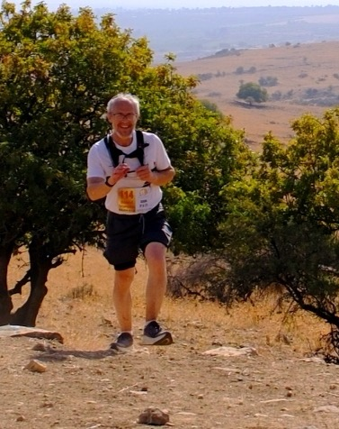
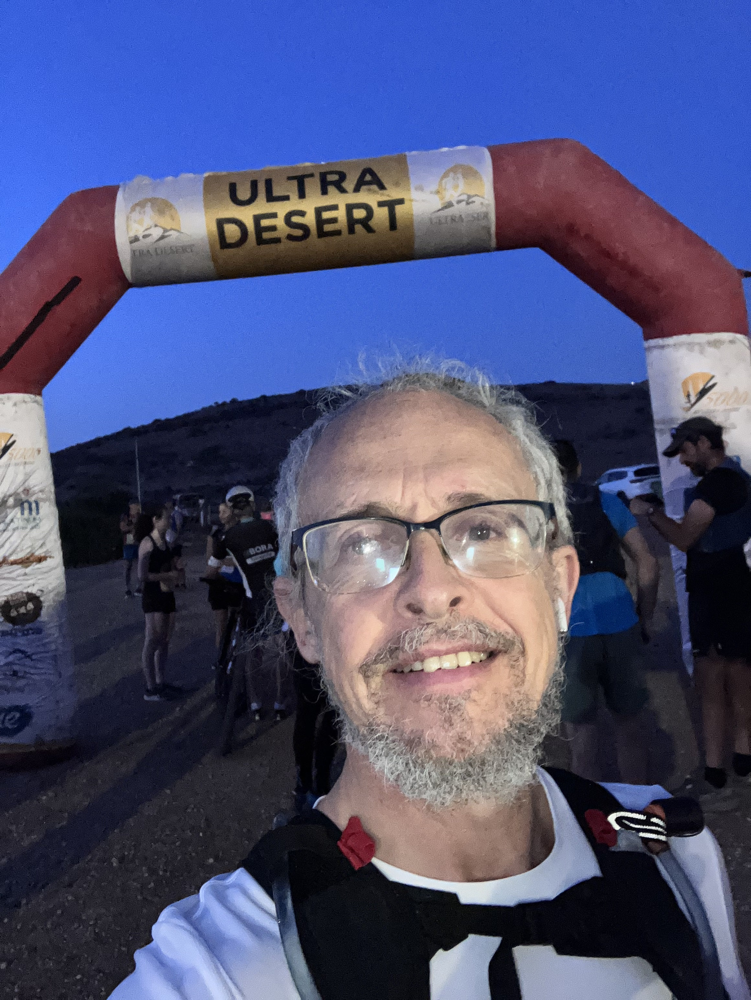
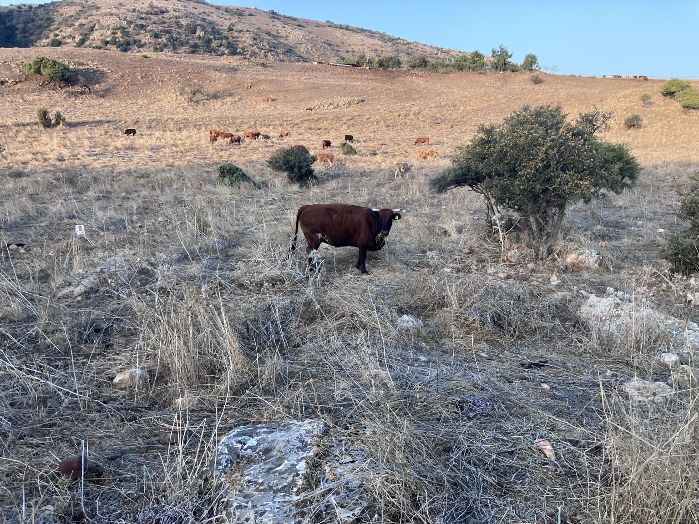
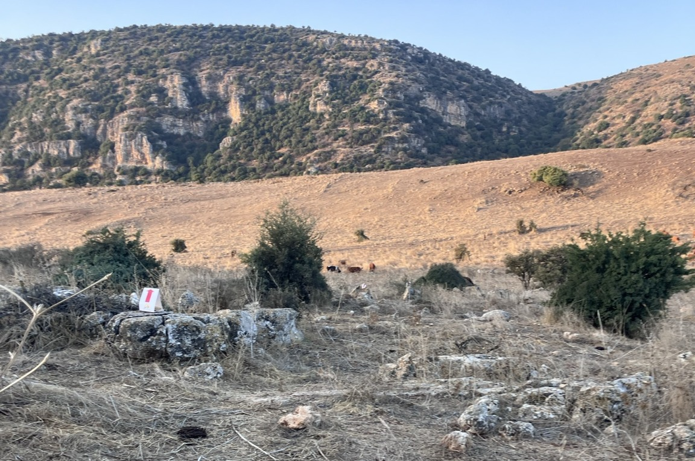
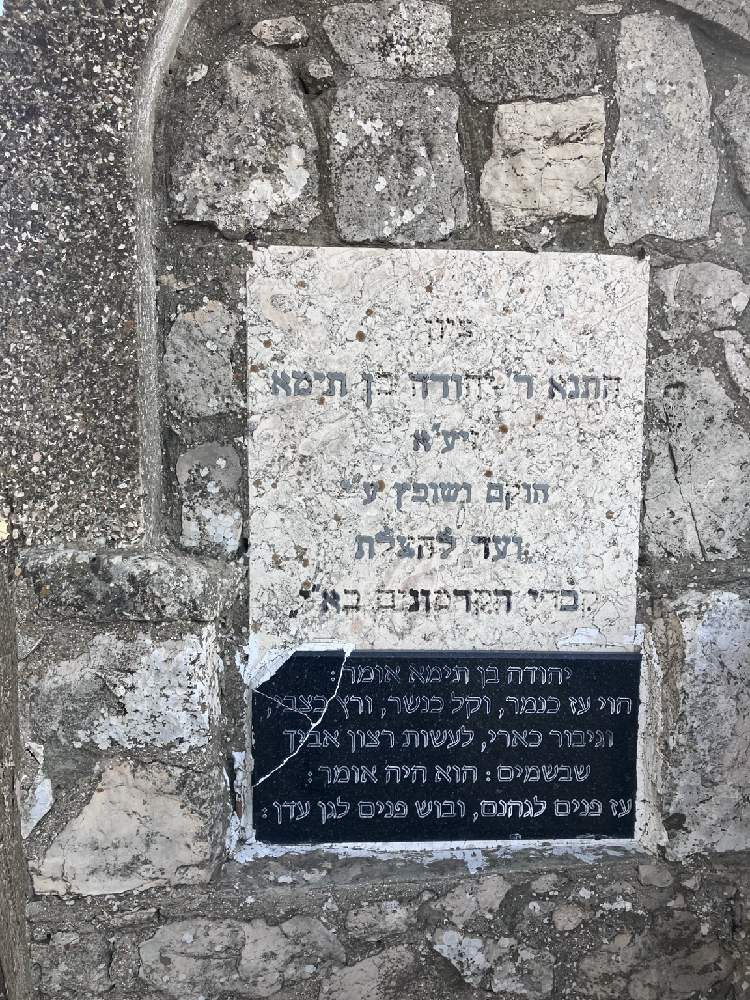
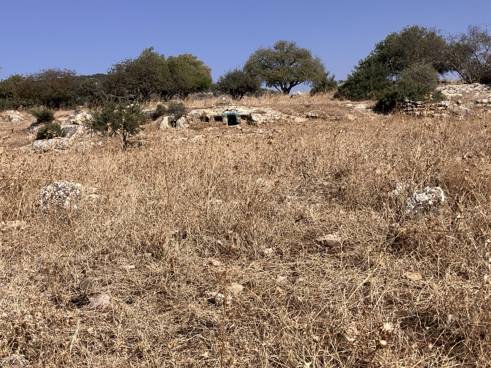
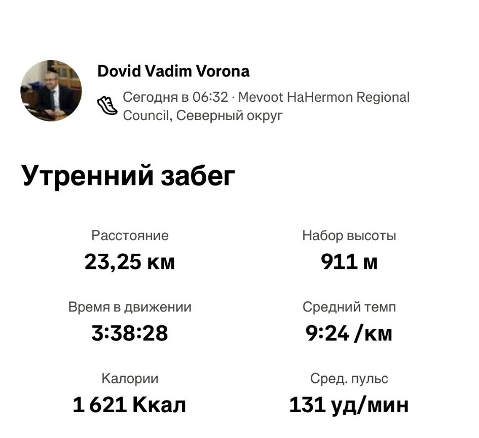

Приключение начинается
Это был не обычный полумарафон. Впереди меня ждали 23 километра крутых подъёмов, каменистых троп, непростых спусков и незабываемых видов.
23 октября 2026 года я участвовал в горном забеге Area 100, проходившем в зоне военных учений на севере Израиля. Он оказался одним из самых трудных и запоминающихся забегов в моей жизни.


До восхода солнца
Я выехал из дома очень рано. Дорога к месту старта заняла около двух часов. Приехал примерно в пять утра, когда ещё было темно.
Старт был назначен на шесть утра. Но Area 100 — действующая зона военных учений, и неподалёку проходили занятия солдат. Нам пришлось ждать разрешения войти на территорию.
Наконец, около 6:20–6:30 мы стартовали — как раз когда начинало светать.




Первые километры
Первая часть маршрута проходила по грунтовым дорогам среди холмов. С восходом солнца пейзажи становились всё красивее.
Бежать по горам ранним утром было замечательно. Свежий воздух, прекрасные виды и предвкушение приключения придавали мне сил.


Настоящее испытание
По мере продвижения маршрут становился всё сложнее. Некоторые подъёмы были настолько крутыми и каменистыми, что бежать по ним было невозможно. Приходилось осторожно идти, а иногда и помогать себе руками, перебираясь через камни.
Спуски оказались ещё сложнее. Осыпающиеся камни делали тропы скользкими, и каждый шаг требовал внимания. Иногда было непросто понять, куда ведёт маршрут.
Все эти сложные участки мне удалось преодолеть, ни разу не упав.





Духовный момент
Один из самых особенных моментов забега наступил, когда я добрался до могилы рабби Йеуды бен Темы, известного еврейского мудреца.
Могила находилась в самой высокой точке маршрута. Я ненадолго остановился там, чтобы помолиться, попить воды и полюбоваться великолепным видом.
Для меня это был не просто забег, но и важное духовное переживание.


Маршрут и мои результаты
Общая длина маршрута составила 23,25 километра, а суммарный набор высоты — 911 метров. По пути встречались грунтовые дороги, узкие горные тропы, крутые подъёмы и сложные каменистые спуски.
Время в движении — 3 часа 38 минут 28 секунд. Средний темп — 9 минут 24 секунды на километр, средний пульс — 131 удар в минуту.
Но цифры передают лишь часть впечатлений. Главным испытанием был сложный горный рельеф.

Финиш
После более чем трёх с половиной часов бега, подъёмов и осторожных спусков по каменистым тропам я наконец добрался до финиша.
Я устал, но был очень счастлив. Мне удалось завершить трудный горный забег среди прекрасных пейзажей и пережить нечто по-настоящему особенное.
Этот забег ещё раз напомнил мне, что бег — это не только скорость и результаты. Иногда самая большая награда — само приключение.